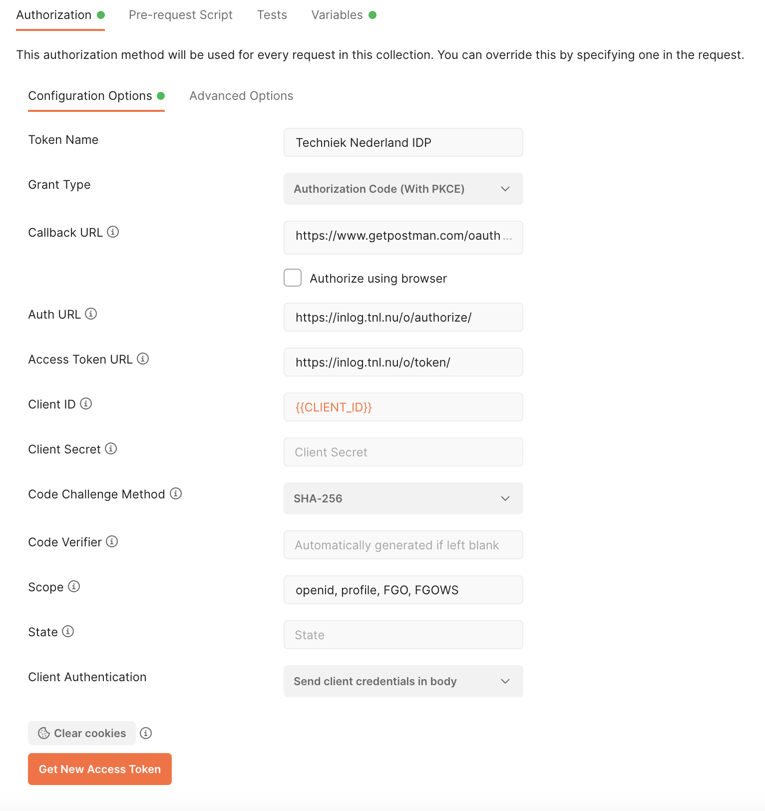

User Authentication¶
Learn how to guide users through the login process, enabling them to access Techniek Nederland’s web services. Detailed instructions will be provided on utilizing the OAuth protocol to authenticate users via the Techniek Nederland IDP.
Basic Concept of the Login Process:¶
User opens your Application and needs to log in.
Your Application redirects the User to the Identity Provider (IDP), providing information to the IDP about your application, the actions you want to perform on behalf of the user, and where the IDP should redirect the user within your application after successful login.
The User logs in to the IDP using their credentials.
The IDP informs the User about the actions your Application wants to perform on their behalf and requests their permission.
The IDP redirects the User back to the specified address of your Application, along with a unique code that can be used to perform actions on behalf of this user.
The following sections will provide further details on this process, including example HTTP requests. We recommend utilizing existing OAuth implementations to handle the authentication flow, which would eliminate the need for manually constructing raw HTTP requests.
Step 1: Register Your Application with Techniek Nederland¶
To use the IDP, your application needs to have identification credentials registered with Techniek Nederland. In this tutorial, we assume your application is unable to securely store secrets. Examples include web browser-based applications (JavaScript applications) or applications installed on the user’s computer. Since these applications are visible to the user, they cannot securely store secrets. Therefore, we will only use a client_id in combination with PKCE (Proof Key for Code Exchange), rather than a client_id and client_secret.
To register your application, please send an email to Peter Zwakhals with the following information:
Application name
Why your going to use the IDP
The redirect_url - the address(es) to which the user should be redirected after a successful login attempt
When making the request, ensure that you provide the complete URL, not just the domain. For example, ‘https://myapplication.com/oauth-callback/’. Also, consider providing any development addresses you would like to include, such as ‘http://localhost:8000/oauth-callback/’ and ‘https://www.getpostman.com/oauth2/callback’.
Step 2: Configure Your Application¶
In this step, we will describe the information you receive from Techniek Nederland and demonstrate how to test it using Postman.
After registering your application with Techniek Nederland, you will receive a client_id. This is a unique identifier that allows the IDP to identify your application. The client_id should be included in your application’s code and in your requests to the IDP. It can be seen by the user and is therefore considered public.
You will need the following information:
- authorization_endpoint
- token_endpoint
- userinfo_endpoint
- openid-configuration
- client_id
To be requested p.zwakhals@technieknederland.nl
- client_secet
Not applicable for client applications
- grant_type
Authorization code (make sure to use PKCE)
- scopes
openid, profile, FGO, FGOWS
Note
The meaning of these terms is beyond the scope of this documentation. We kindly refer to the documentation of the OAuth library you choose, or alternatively, resources such as Auth0, which provide clear explanations of these terms.
With this information, you can now configure your application. In this tutorial, we will describe how you can configure Postman.
Open Postman.
Choose ‘New’ > ‘Workspace’.
Name it ‘Techniek Nederland’.
Click ‘New’ > ‘Collection’ and name it ‘Identity Service Provider’.
Open ‘Identity Service Provider’ in the left side menu.
You will now see the content, and the ‘Authorization’ tab is active.
The ‘Type’ is currently set to “No Auth”. Change it to ‘OAuth2’.
Go to ‘Configure new token’ and select ‘edit’ if necessary.
Set the Token Name to ‘Techniek Nederland IDP’ (you can choose any name you prefer).
Fill in the configuration details (refer to the screenshot as well).
Click ‘Get New Access Token’.
Continue to Step 3 for further instructions.
Please note that the provided screenshot is for reference only, and the actual configuration may differ based on your specific OAuth implementation and Postman version.
Step 4: Obtaining an access token¶
With the temporary authorization code from setp 3, you can now request an access token and related information. The access token is ultimately the means by which you can retrieve data on behalf of the user. For example, you can use it to request information about the user from the IDP or access other web services that the user has granted you permission to.
It’s important to note that the access code is also temporary. For security reasons, the access token expires after a certain period of time. This is crucial because the access token is shared with external entities, such as other web services. That’s why you also receive a refresh token. You should only share this token with the IDP and only share it once, when requesting a new set of access tokens, refresh tokens, etc. The refresh token can only be used once, and after that, you will receive a new one. Finally, you also receive an id token (when using the openid scope). This token contains encoded user information, but how to decode it is beyond the scope of this tutorial to cover its details.
How the code_verifier was generated is beyond the scope of this tutorial.
In step 2 your hit the ‘Get New Access Token’ in Postman. Step 3 and step 4 are performed automatically after the user gives permission. You will now see the ‘token details’ provided by the IDP. If you want to make the http call manually, you can use the following HTTP request:
- POST https://inlog.tnl.nu/o/token/¶
Request access token
- Request Headers
Content-Type – application/x-www-form-urlencoded
- Query Parameters
grant_type – The grant type. Set to “authorization_code”.
code – The authorization code received in the previous step.
code_verifier – The code verifier (for PKCE).
POST /o/token/ HTTP/1.1 Host: inlog.tnl.nu Content-Type: application/x-www-form-urlencoded grant_type=authorization_code&code=ABCDEFGabcdefg0123456789&redirect_uri=https%3A%2F%2Fwww.getpostman.com%2Foauth2%2Fcallback&code_verifier=Pd9Sju1dCBVoegn-eViAME-jctqBFcAsOiJaULxopbY&client_id=ABCDEFGabcdefg0123456789ABCDEFGabcdefg0123456789
Example response
HTTP/1.1 200 OK Content-Type: application/json { "access_token": "ABCDEFGabcdefg0123456789", "expires_in": 36000, "token_type": "Bearer", "scope": "openid profile", "refresh_token": "ABCDEFGabcdefg0123456789", "id_token": "eyJ0...---" }
Your application is now authorized to make requests on behalf of the user. You’ve reach the end of this tutorial and can now continue to the User Data Retrieval tutorial where we will explain how to use your token to obtain user info.